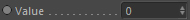
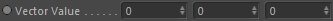

Outports
Value

Outputs the grid cell's scalar value at the specified position (depending on which Position inport has been linked).
Vector Value

Outputs the grid cell's vector value at the specified position (depending on which Position inport has been linked).
Grid Cells Count
Returns the current Grid Cell Count (adaptive container space).
Grid Cells Count (iterator)
Returns the current Grid Cell Count (adaptive container space) which can be used in a 'Voxel Iterator' to browse all available cell in a grid-based node.